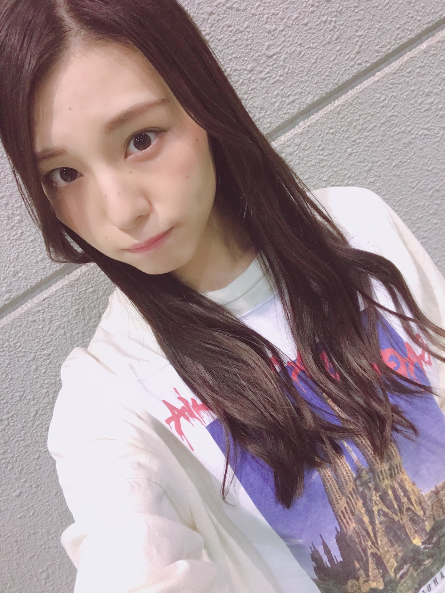
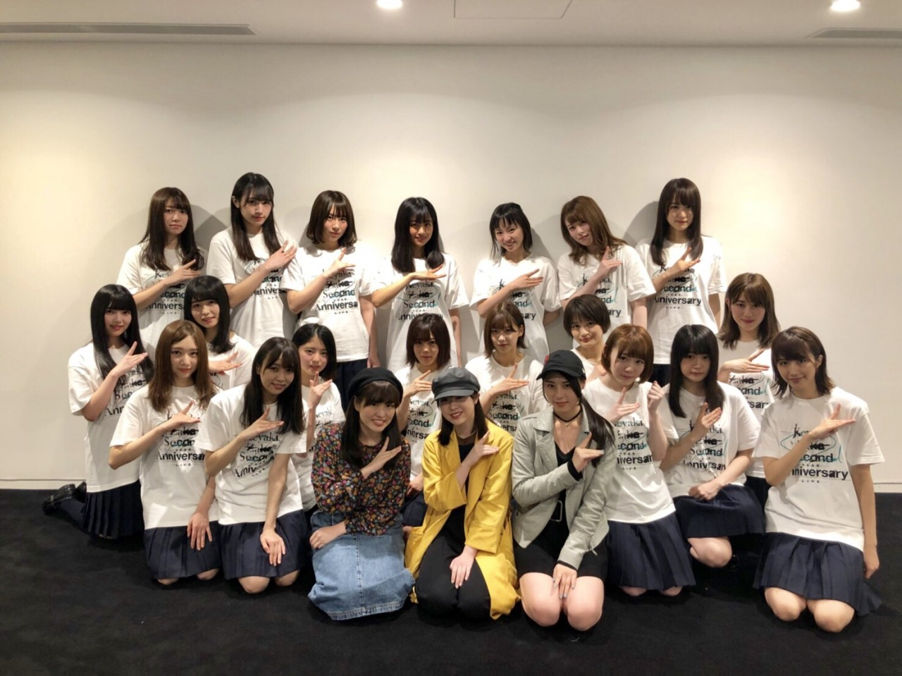
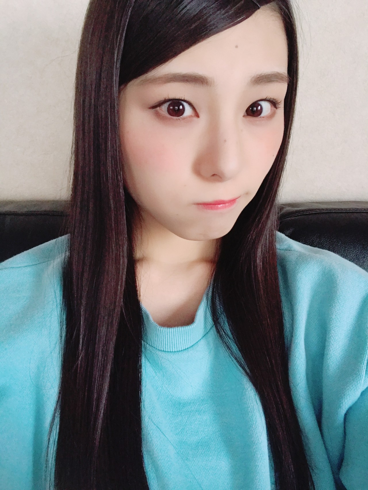
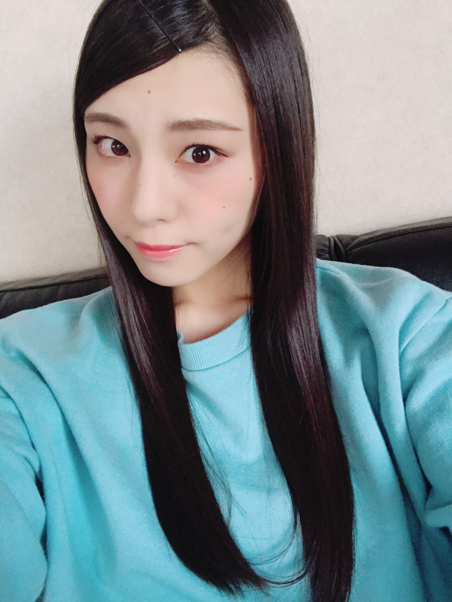

| 2018/04 10 Tue | 浸った時間かえせー _(．．*)vol.227 |
みなさんこんばんは
相楽伊織です

もう少し髪の毛伸ばす。
新しい生活を迎えた皆さん！
元気ですか！！
新しい環境とか生活とか人間関係とかで
心がわさわさしてる時期だけど
慣れたらなれっ子ですよヽ(*^^*)ノ
がんばれー！
懐かしいな、
入学式とか始業式とかクラス替えとか
そういうワード聞くと
なんか、うるうるする、なんだろ。笑
肩、切っちゃった。♡笑
先日、
3期生の舞台｢星の王女さま｣を
観に行ってきました！
3期生のみんなが一生懸命な姿って
すごくキラキラしてて
いいなって思うんです(^^)
みんな可愛いし
あまり舞台のことは詳しくないんだけど
それぞれ時間がない中で
頑張ったんだなぁと感じました。
残りの公演も
全力で頑張って欲しいと思います(^^)
それから欅ちゃんのライブも
行ってきましたー！

記念写真撮れたのすごい嬉しい。。♡
(かりんちゃんブログと同じ写真↑)
オープニングからカッコよすぎて
鳥肌立ちました！
みんなカッコイイし
お顔は可愛いし曲も素敵だし
一瞬で心持ってかれましたね( .. )♡
乃木坂とはまた違った雰囲気のライブで
すごく新鮮なライブでした！
パフォーマンスで
こんなに心揺さぶられるんだって驚き。
あと、たまたまかもしれないけど
巻き髪の子がいなかったのが印象に残ってる。
私は欅坂のライブは初めてなので
平手ちゃんがセンターでパフォーマンスしてる姿を
TV以外では見たことは無いんです(><)
だから今度は
平手ちゃんセンターも見たいなーって思いました！


みずいろ
今週もSHOWROOMやりたいと思ってるので
決まったら755とメールでお知らせします！
平日かな、多分！
i o r i .

コメント(261)
2018/04/10 20:48